01Introduction
How do I get started?
You're joining thousands of people just like you who seek to manage their work orders online, seamlessly integrate preventative maintenance routines on buildings, vehicles, locations, assets and much more. Technical support is free and available 24/7 through our Support Center located within your dashboard. Don't be shy to contact us directly if you have tougher questions or deeper concerns. Maxpanda is a user friendly work order management software. 100% web based & customizable for all your integrated facilities management services. It helps you manage your day to day operations in single or multiple buildings or worksites all through self customizable dashboard. Not sure which plan is right for you? Visit our pricing plans page and see where you fit in the best. Start small - grow big, just like we did! Let's face it, companies large and small are embracing sustainable business practices, because taking steps to save the planet saves money over the long term and that can boost the bottom line.- Hopefully you've already decided on a monthly pricing plan that fits your budget
- Register for an account here
- Upon completing your company registration - select a monthly plan
- You can always upgrade or downgrade your account anytime
- Pay securely with a Credit Card
- Start setting up your account
02Questions & Answers
- Q. How many USERS can I invite into my account?
- A. Unlimited. This applies to internal/external staff and vendors.
- Q. How much data can I store in my account?
- A. Visit our PRICING page. Storage starts at 1gb to 50 gb depending on the amount of images and documents you would like to back up on our servers. All images are compressed before uploading to your database. A 5 meg HiRez image is saved as a 300kb file. AWESOME!
- Q. Can I cancel my subscription?
- A. This is a strange question but yes, there is a 'cancel subscription' button within your dashboard available to you 24/7. But please speak to us first, there's always a solution to every problem.
- Q. My credit failed. What now?
- A. 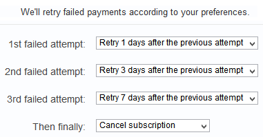
- Q. What database is used for my data?
- A. Mysql. But YOUR DATA is always available to you to download in csv, excel, pdf and printed version right within your Dashboard 24/7.
- Q. Can I upload images into work orders & PMs within a workorder?
- A. Yes of course, each file uploaded to any work order has a limit of 10 Megs. Files such as guides and o&m manuals are attached.
- Q. Are work orders date/time stamped?
- A. Maxpanda's work flow is fluid. A PM is scheduled, generated, assigned to a worker (pre or post), time stamped with generation date and each step of the way Maxpanda will time stamp either closed dates and reopened/closed dates. A full history of every PM occurence is always available within each PM that is generated. Think about it, no more searching or reporting on the history of that asset or location! It's right there each time a pm is generated.
- Q. I need time to get aquainted and setup my Maxpanda.
- A. We provide you with your first 15 days free starting from the day you register. This gives all our clients ample time to setup their company, train staff and follow the yellow brick road to maintenance management nirvana.
- Q. We currently use a bunch of excel sheets to record our assets and locations. Work orders are provided to the maintenance department on paper.
- A. No problem. We can provide you our own excel templates which you simply fill out (copy paste). We import your data into your new Maxpanda company account. Say goodbye to paper - all your future work orders are electronically submitted from anywhere in the world using any web browser, tablet or smartphone.
- Q. We don't have internal maintenance staff, only external vendors that work on our properties.
- A. That's great! Just setup all your vendor contacts list in your dashboard. When you need a vendor to perform a job task simply add them to the work order you are about to approve. They receive an email notification. The entire process is performed from the comfort of your office or on the road. PLEASE DO NOT USE MAXPANDA WHILE DRIVING!
- Q. Is there a way to customize the email notifications that are sent out as reminders? Like PM email that includes at least the title of the event?
- A. The WORK ORDER TITLE is included in the SUBJECT LINE for every email notifications.
- Q. I noticed the PM Occurrences Tab, under the Preventative Maintenance - Edit page, has an "OnHold" column but I do not see a way to actually utilize this, is it an available feature?
- A. Only the Admin may enable PM's on hold anytime. This is where you'll see your OnHold PM's WO's listed. In the PM menu while editing a PM, simply select the 'NO' feature.
- Q. Is there a way to customize the Work Order Status names?
- A. No; only the ASSET Status can be modified which is then applied to the WO. This feature and other company modifications can be changed created in the COMPANY SETUP menu.
- Q. Can I schedule a Preventative maintenance WO in time-based mode rather than per day? This is important because work orders need to be scheduled in certain time frame during the day so as not to effect operations.
- A. Yes. Each pm schedule is generated hourly. Maxpanda allows start times at specific times of day depending how you set up your PM. For example, you may have a start time of 6pm and a due date of 9pm for the same day. HOURLY scheduling and altering of your PM's can be manipulated through your Calendar View as well.
- Q. Can I reschedule PMs for our operation in that I constantly need to reschedule PMs around other work orders and events.
- A. You are allowed to alter the SCHEDULE anytime for each PM. In fact you can alter each OCCURENCE (present or future) or the PM Schedule right from your dashboard or calendar view.

- Q. Do my PM's have a history or recurrence listing of all generated PM's related to my schedules?
- A. A recurrence listing column to show how often each PM has been generated is included within each Preventative Maintenance WO. No need to generate reports or view history data. All your generated pm occurences are listed per PM.

- Q. Can I filter work orders by Title, Status, Date, etc?
- A. Yes. Your Work Order List has all the filters you need in real time.
- Q. Can I print my work orders (single or multiple)?
- A. Yes. You may print, copy to sytem memory, export to excel or pdf.
- Q. I have many clients that I want to submit work orders from around my campus on our computers. How do I put a shortuct for Maxpanda on their desktops?
- A. Easy. Simply click on CREATE NEW WORK ORDER in your panel.
Save it as a shortcut on your desktop then distribut that shorcut to all computers you would like work orders coming from. It should look like this -

03Screenshots
Add, edit and track unliimted Assets.
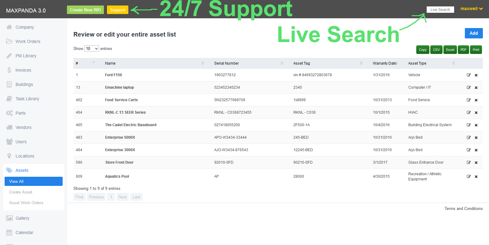
The work order list is color coded providing you with a sense of urgency Color codes definitions can be found in the Calendar View.

Maxpanda's Calendar is an amazing tool! The Calendar displays both hourly preventative maintenance work orders and daily. The Calendar has drop and drag capabilities for manipulating pm and work order dates. This makes handling time, resources and your team a breeze. This screenshot is the DAY AND WEEK view.
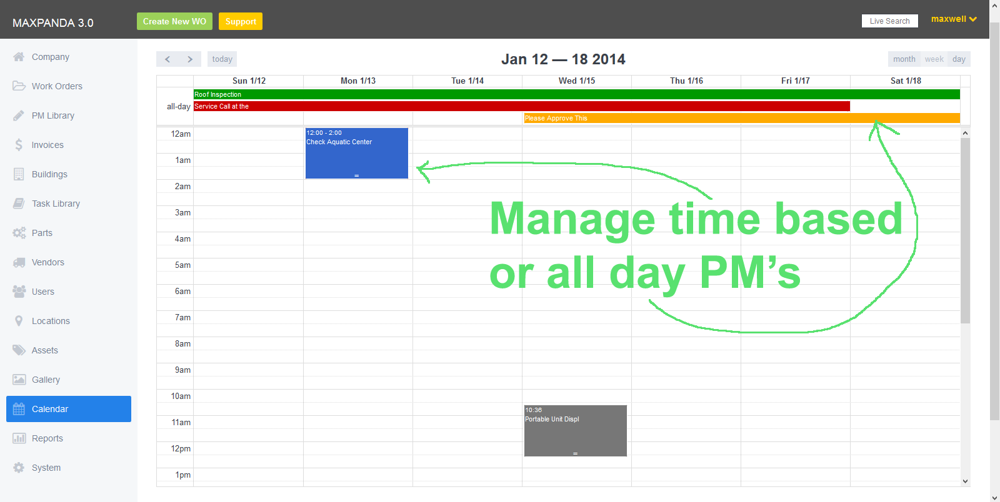
The Calendar displays all your preventative maintenance schedules. It also shows FUTURE PM's so you know what's coming up next week, month, year.
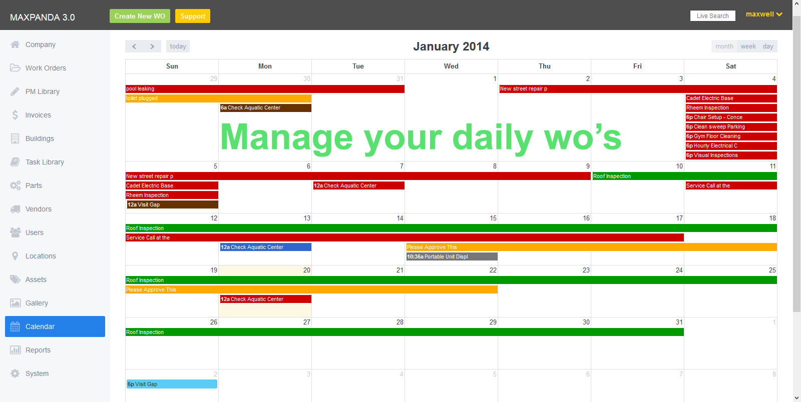
Real-time reports within your dashboard. Search all work order status or counts instantly. Need to know whose working on what? Search it.
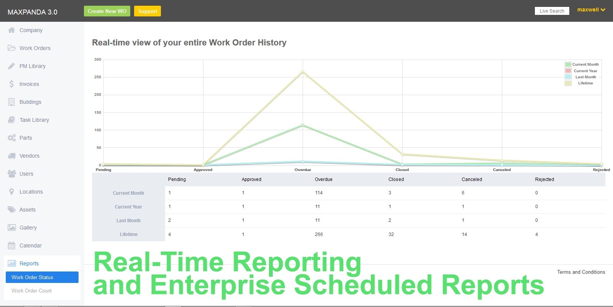
04Pre-planning & Setup in 10 easy steps
Most new clients find this following implementation plan to be most effective. Note: it is not required to add any of the following data to your new Maxpanda Account. You may submit work orders anytime you are ready.
- Upon signing in click on (left main menu) - COMPANY and select PREFERENCES. If you want to show time stamps on your work orders choose YES. If you want to create work orders using minutes (i.e. a PM should take 45 minutes and is due today) then select 24 Hour Time Format. Selecting the 12 hour format makes PM scheduling/closing an all day standard.
- Click on Company Setup (left main menu) - Maxpanda comes with the standard Location Type, Asset Type, Asset Status, Work Order Category and Work Order Priority. If you need to add and define your own please do so now.
- Add your BUILDINGS - Very important since BUILDINGS are the parents to LOCATIONS & ASSETS.
- Add your LOCATIONS - When submitting a work order you can use BUILDINGS to filter thousands of LOCATIONS easily.
- Add your ASSETS - Since your LOCATIONS are populated, you and your Vendors will know where the ASSET is location.
- Invite USERS - We have 7 roles to choose from when inviting USERS. Simply enter a users email address, select a role and they do the rest.
- Add your PARTS - Parts are associated to ASSETS and the inventory/cost is tracked by the system.
- Add your DOCUMENTS - If you have pictures of your ASSETS or LOCATIONS etc...it's time to add those to your library.
- Create TASKS - Your TASK library will help you save time when adding new TASKS to wo's or pm's for approval. Create as many TASKS you think may occur in your company once and they'll be available ad hoc. Each TASK TEMPLATE can hold unlimited TASKS, be creative!
- Schedule an internal maintenance meeting. Create new processes around your new Maxpanda Software. Slowly roll them out to your co-workers and vendors.
05Work Orders
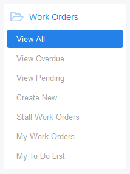
Maxpanda conveniently organizes your day to day and preventative work orders (wo's). WO's are very permission based. The software is dependent on these permissions to allow users view or edit rights.
View All - This is the default list for all your generated work orders. Here you can;
1. Edit work orders
2. Filter work orders to find what you're looking for
3. Import your work order to excel, adobe, etc
4. Add work orders
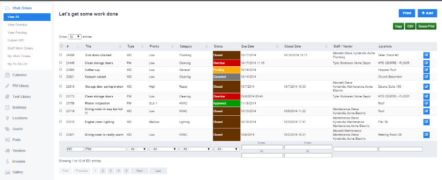
View Overdue - Lists all overdue work orders (RED)
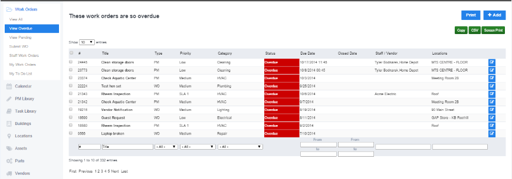
This is a very important feature of Maxpanda's system as you can view, edit and filter all of your overdue work orders.
View Pending - You need to approve these work orders. They're in limbo.
This tab will be a very important page for your administrator, secretary, office staff, etc whom are looking over all work orders within your oranization. When work orders are submitted they will need to be approved before they go live to your staff or vendors. To do so, click on the edit button circled.
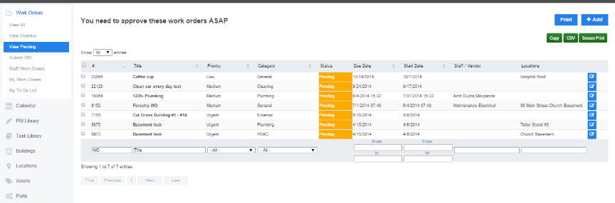
Once here, your admin user or editor should review the entire work order before approving. It is important to make sure all tasks, staff, parts, etc. are correctly assigned to the work order. The admin/editor can also make changes to the work order. Once he/she has done so, they can either: 1. approve the work order or 2. Cancel the work order
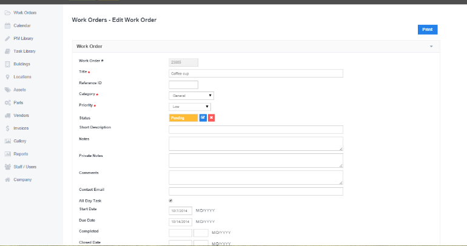
Once it is approved, all involved users will receive email notification regarding the work order. It will then show up on their to-do list.
Create New - Create a new work order. You can do it!
You can submit work orders by clicking on the green 'submit wo' at the top of the page, click ADD in the view all menu, or by simply clicking the Submit wo tab.
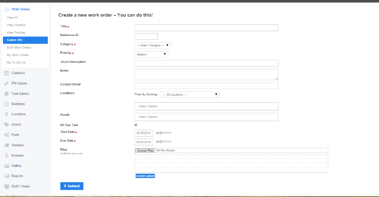
Steps:
1. Fill in required fields;
a. Title - This is the title in your subject line that shows up in the email sent to all staff involved
b. Category - Select from the drop down menu the type of work order. To learn how to add an additional work order category please see section 18 (company setup) by clicking here
c. Priority - Select from the drop down menu the level of priority. To learn how to add an additional level of priority please see section 18 (company setup) by clicking here
d. Start and end date - the start and end date is automatically set to start on the creation date and end 7 days in the future. You can set these for any dates. Note: Only the admin and editor can change these dates, all other users cannot.
2. Fill-in non-required fields
a. Fill in field you feel is necessary for your work order.
Staff Work Orders - Search and organize your work orders by internal resources (maintenance staff). All you need to do is enter the date range and choose which staff you will like to view.
My Work Orders - These are all the work orders you've submitted into your account.
My To Do List - You've been assigned to these work orders. Let's get to work.
06Calendar
Monthly View: Shows all wo's for each day
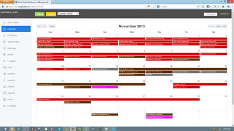
Weekly View: Shows all day items at the top and hourly scheduled wo's
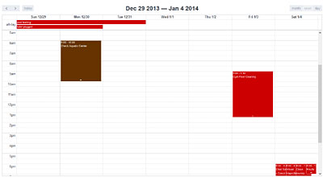
The Calendar provides added benefits when working with work orders. These include:
- Hyperlinks open work orders
- Drag n Drop work orders from 1 day to another
- Alter entire pm occurences by day week or month
- Alter either the pm schedule or future occurence
- Change the amount of time alloted to complete the work order
- Color coded links to show current status
- Yellow - pending, you need to approve a new work order.
- Green means go - you've Approved a new work order.
- Red - Overdue, was not completed or closed in time depending on the due date during the approval stage.
- Black - Rejected. Add a note for history, the submitter receives this as well.
- Grey - Cancelled. Maybe there we're 2 submitted and you simply needed to cancel one.
- Blue - FUTURE PM. These can only be viewed in the calendar (future dates) or in VIEW UPCOMING list.
- Pink - Reopened. Maybe you forgot to add an invoice or picture. Go ahead reopen closed work orders.
- Orange - Completed. This status color is reserved for the RESOURCE or MAINTENANCE ROLE only.
- Brown - Closed. When the work is done, close the work order.
07PM Library
The PM Library is your list of all system generated preventative maintenance work orders towards a location (bathroom, unit, building, garage etc..) or asset (any type of equipment). The PM Library is very powerful allowing you to create a full featured preventive schedule and letting the application do the rest. Full email and push notifications are handle through the app leaving the ADMIN to simply review COMPLETED work orders and CLOSE them off.
Step by Step to creating your 1st PM
- Select PM LIBRARY within your dashboard menu then CREATE NEW PM
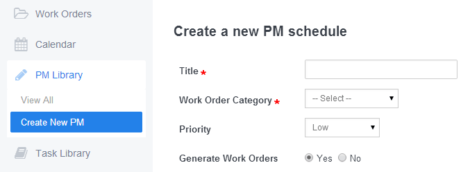
- The PM is setup in 2 parts. Part 1, 1st page:
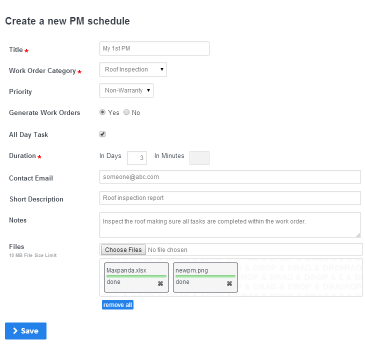
Title - Input a short title to reference your pm. The title is also the subject line in all outgoing email and push notifications.
Work Order Category - This list is edited by the ADMIN in COMPANY SETTINGS and used to group work orders into a defined category.
Priority - This list is edited by the ADMIN in COMPANY SETTINGS and used to group work orders in priority such as Urgent, Medium, Service Level Agreement etc...
Generate Work Orders - You may pause the generation of pm work orders.
All Day Task - If selected this means a STAFF or VENDOR has until midnight to COMPLETE the work. If unchecked, you can specify the duration of the work in minutes.
Contact Email - Sometimes you don't want to invite a contractor or staff into your account as a new USER. Use this field to add an external person to the work order and receive notication through email. Using semi colon, you may add multiple people to a work order.
Short Description - Use 3-4 keywords to describe the work. In the future your STAFF and/or VENDOR will not require reading the entire Notes.
Notes - Use notes to write up your PM requirements clearly. Notes can be step by step todo items regarding the PM by the manufacturer.
Files - Alternatively you may attach unlimited files to a PM. These can be O & M manuals, Images, Office docs and even audio files. The attachments are always available within the pm for review by the staff/vendor.
Save - Once you have completed all the data requirements click SAVE and move to step #2.
- PM Setup Part 2:
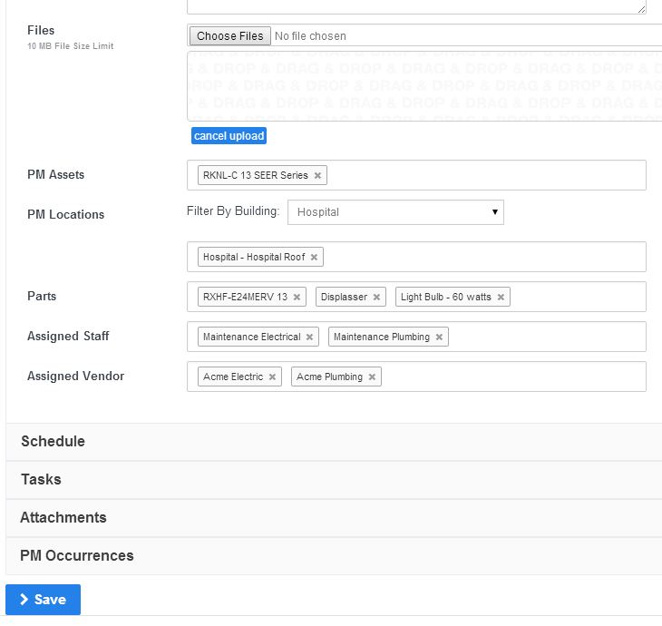
The entire PM is part of a 5 page according. We are now on page 1 of 5 sections. Assign assets, locations, parts, staff and vendors to the scheduled pm. You have a choice, either do this now or when the PM is generated. Since pm's are system generated and auto APPROVED (green) you should do this now.
PM Assets - This will be the dropdown selection for all your equipment/assets in your database. For example, if you schedule a monthly oil change on your truck the asset is your truck.
PM Locations - This will be the dropdown selection for all your Locations in your database. Use BUILDINGS to group locations making it easier to filter through hundreds. By typing in any letter, Maxpanda auto filters your lists alphabetically.
Parts - You have a choice here. Pre-assign parts when creating your ASSET list (assigning parts to each asset) or assign parts at the pm level. If you assigned parts to an asset previously you do not need to add the part within the pm, Maxpanda handles that for you. As parts are assigned to pm's, they are available for consumption when the work order is completed by staff/vendor and inventory is auto managed by the app.
Assigned Staff - If you assign the pm to an internal maintenance staff at this point they will always receive the generated pm, email and be assigned to it in their work order list.
Assigned Vendor - If you assign the pm to an external vendor/contractor at this point they will always receive the generated pm, email and be assigned to it in their work order list.
- PM Setup Part 3, The Schedule:
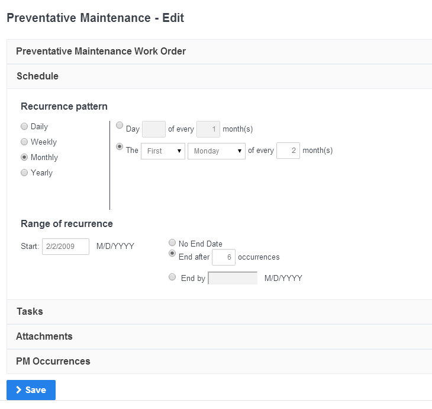
Recurrence pattern - Maxpanda mimics Microsoft Outlook Scheduling system making it familiar to you. Create a pm work schedule daily, weekly, monthly, yearly and in any permutation.
Range of recurrence - A recurrence is a new system generated work order. You can create an endless schedule or define how many occurences you want to generate. In the above example we see a pm wo will generate every 2 months (1st Monday of each Month) and for 6 times. Meaning our PM was for a 1 year period on a locatin or asset.
- PM Setup Part 4, PM Tasks:
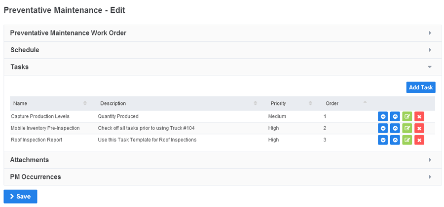
Tasks - It is for your benefit to pre-assign TASKS (created by you in your TASK LIBRARY) to your PM's. Tasks can be ordered in priority and assigned to various staff/vendors. You as the admin can create tasks that must be completed before the pm is closed. Each task can hold unlimited items to be completed by staff/vendors. Tasks are powerful and allow the admin to ensure all work has been completed for the pm. Get creative, create multiple Tasks now to see how they fit into your organization.
- PM Setup Part 5, PM Attachments:
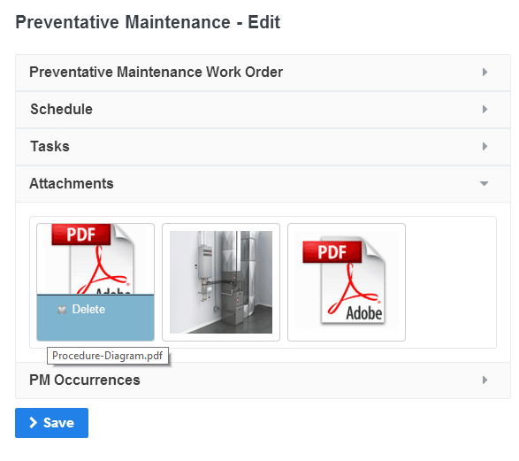
Attachments - Attach working drawings, schematics, O & M manuals, Images, MP3's, Office documents to your pm's. These items are visible to everyone you assign to the pm. Staff/Vendors can even update the files or take new pictures using smartphone/tablets and add to the pm or work order. Great for condition reporting on assets/locations.
- PM Setup Part 6, PM Occurences:
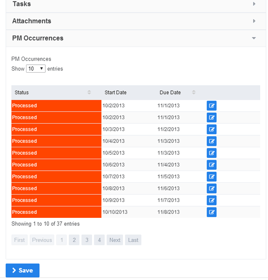
Maxpanda stores every generated work order for each of your pm's within your pm template giving you quick access to all your historical data conducted on a location or asset. In this example we can open up each work order generated from this pm as far back as October 2013 allowing us to review the history of the entire wo.
08Task Library
Creating tasks to import into work orders or your pm library.
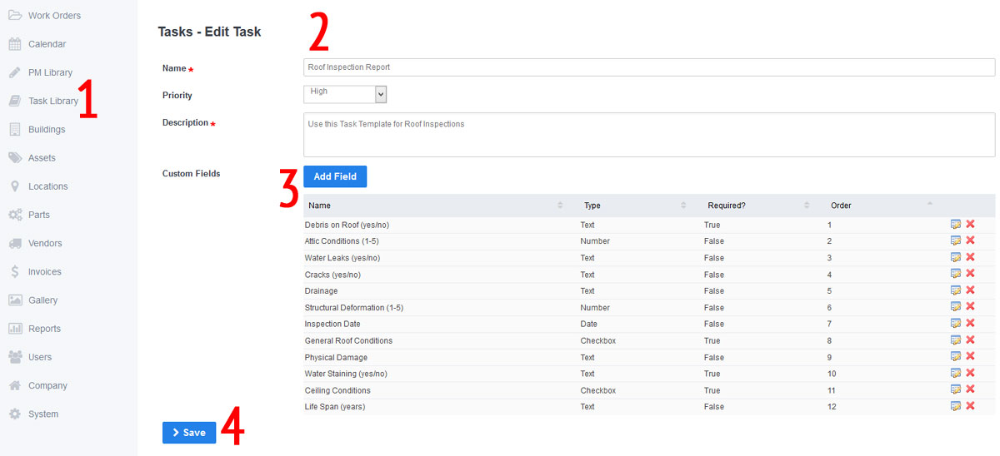
STEPS:
1. Go to your task library and CREATE new TASK
2. Define the title, priority and description of task
3. (Very important) Click save then click on ADD FIELD button. These are the type of task's data you want to capture. In my example I have 12 tasks that need to be filled out by a RESOURCE before I (the ADMIN) can CLOSE the WO
When adding task fields, you will need to select a field type;
DateTime gives you the option to include an exact time in the date field.

Required? - the field you have added must be completed before the work order can be closed.
Once this is done, you will have 1 task in your task library. Create as many as you like, then import 1 or all in any work order or pm.
09Buildings
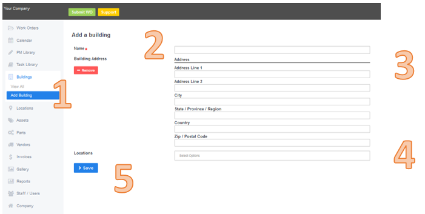
STEPS:
1. Go to your buildings tab and ADD BUILDING
2. Enter the commonly used name of the building
3. Enter the Address of the building
4. This list of LOCATIONS are locations that have not yet been assigned/grouped to any building in your account. If you wish to assign any locations to the building, here you can assign as many as you want. To create additional locations, See section 11 (Locations)
5. Save
You can also edit any building you have created by click on the edit button in VIEW ALL
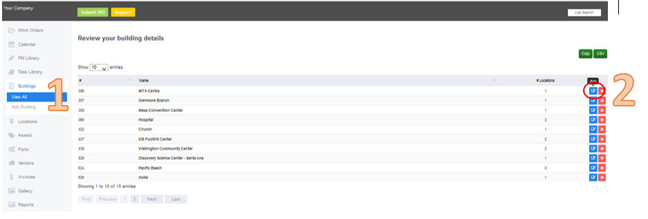
10Assets
Create a new asset in your register/database/asset-list
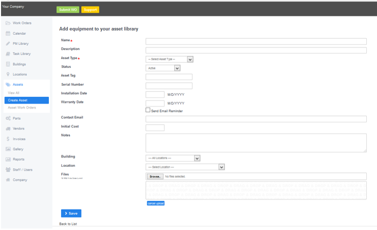
STEPS:
1. Go to your ASSETS tab and CREATE ASSET
2. Fill in required fields:
a. Name - Enter the name of the asset
b. Asset type - Select the type of asset from the drop down list. If none apply, create a new asset type by going to ASSET TYPE under COMPANY SETUP in the COMPANY tab. Then click ADD in the top right corner. Click here for further instructions
3. Enter all the necessary non-required fields you wish to complete;
a. Description - Enter a short description of the asset
b. Status -Select the type of asset from the drop down list. If none apply, create a new asset type by going to ASSET STATUS under COMPANY SETUP in the COMPANY tab. Then click ADD in the top right corner. Click here for further instructions
c. Asset tag - Any sort of identification of the asset
d. Serial number - You can enter the serial number of the asset if you have several similar assets
e. Installation date - the date in which you had the asset installed
f. Warranty date - the date in which the warranty ends
g. Contact email - Enter an email you wish to be notified when your warranty on the asset has expired
h. Initial cost - Enter the asset cost
i. Notes - Any notes you wish to include regarding the asset
j. Building - the building in which the asset is located
k. Location - Where in the building it is located
l. Files - any pictures or documents you wish to attach regarding the asset
4. Save
Viewing your asset work orders
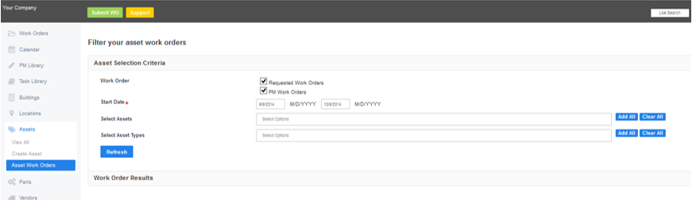
1. You can filter your asset work orders by a combination of 4 different criteria
a. Work orders - Requested work order and/or preventative maintenance work orders
b. Start date - automatically searches a date range going from today to a month from you. However, you can adjust the start and end date.
c. Select assets - you can filter by asset or ADD ALL
d. Select asset types - you can filter by asset types or ADD ALL
2. Click RESFRESH to view the asset work orders you have filtered above. They will be down under WORK ORDER RESULTS;
3. On the screen above you can also filter by WO number, title, type, priority, category, status, due date, start date, asset and location. The highlighted area above shows where to set these filters.
4. From here you may also edit your asset work orders by clicking on the edit button on the right hand side.
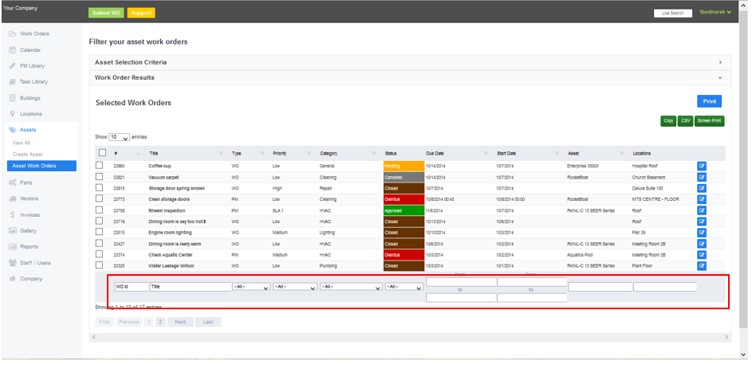
You can also edit any asset you have created by click on the edit button in VIEW ALL
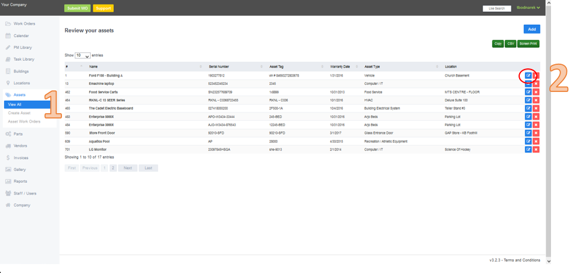
11Locations
With Maxpanda, you can specify work orders pertaining to specific areas within your buildings. Examples include roof, basement, Room #202, etc.
Add new Locations
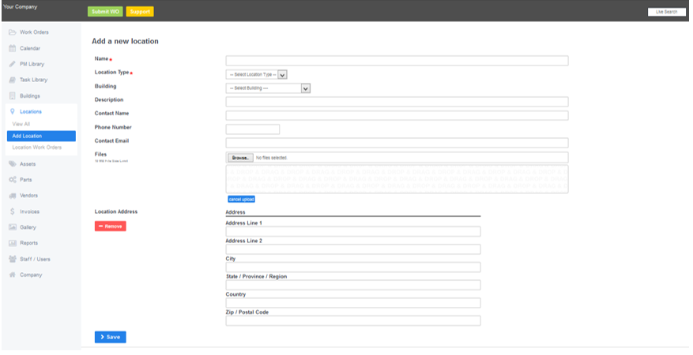
STEPS:
1. Go to your LOCATIONS tab and ADD LOCATION
2. Fill in required fields:
a. Name - Enter the name of the location
b. Location type - Select the type of location from the drop down list. If none apply, create a new location type by going to LOCATION TYPE under COMPANY SETUP in the COMPANY tab. Then click ADD in the top right corner. Click here for further instructions
3. Enter all the necessary non-required fields you wish to complete;
a. Building - Select the building in which the location resides.
b. Description - Enter a short description of the location
c. Contact name - If you wish to like to have someone (ie a maintenance worker) associated to a specific location
d. Phone number - The phone number of the contact person(s)
e. Contact email - The email address of the contact person(s)
f. Files - any pictures or documents you wish to attach regarding the asset
4. Save
Viewing your location work orders
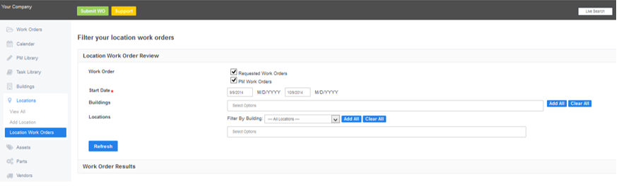
1. You can filter your location work order by a combination of 4 different criteria
a. Work orders - Requested work order and/or preventative maintenance work orders
b. Start date - automatically searches a date range going from today to a month from you. However, you can adjust the start and end date.
c. Select buildings - you can filter by building or ADD ALL
d. Select locations - you can filter by location or ADD ALL
2. Click RESFRESH to view the location work orders you have filtered above. They will be down under WORK ORDER RESULTS;
3. On the screen above you can also filter by WO number, title, type, priority, category, status, due date, start date and location. The highlighted area above shows where to set these filters.
4. From here you may also edit your location work orders by clicking on the edit button on the right hand side.
Editing locations
You can also edit any location you have created by click on the edit button in VIEW ALL
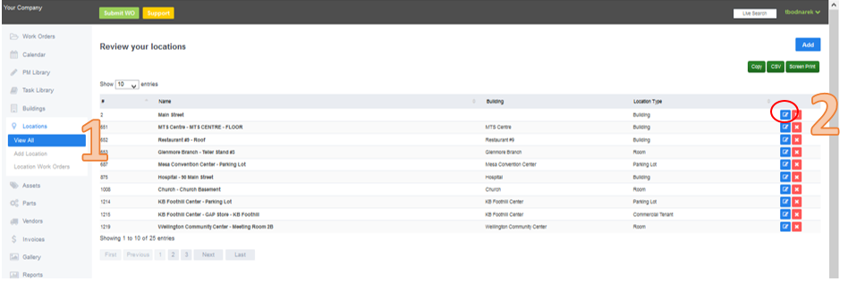
12Parts
Create a new part
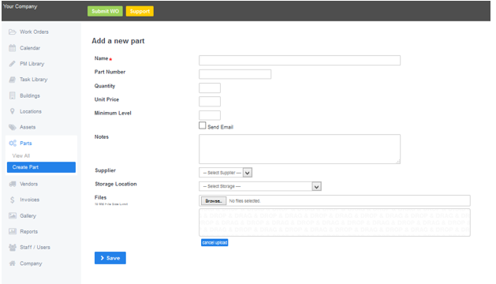
STEPS:
1. Go to your PARTS tab and CREATE PART
2. Fill in required fields:
a. Name - Enter the name of the part
3. Enter all the necessary non-required fields you wish to complete;
a. Part number - Enter any part number associated with the part you're creating in your Maxpanda system
b. Quantity - how many parts do you have in inventory?
c. Unit price - the price of the part
d. Minimum level - At which point does inventory require replenishment? By checking in the 'send email' box, you will be notified when the inventory of the part you're creating reaches a certain level.
e. Notes - you may include any notes pertaining to the part
f. Supplier - Select the supplier from the drop down list. If you need to create a new vendor, Please review VENDORS (section 13) by clicking here.
g. Storage location - Select the location in which the part is part from the drop down menu. If you need to create a new location, please review LOCATIONS (section 11) by clicking here
h. Files - any pictures or documents you wish to attach regarding the part
4. Save
You can also edit any building you have created by click on the edit button in VIEW ALL
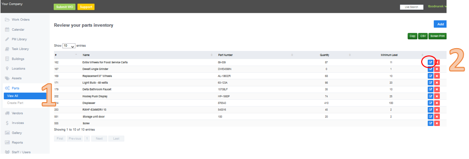
13Vendors
Create a new Vendor / Contractor
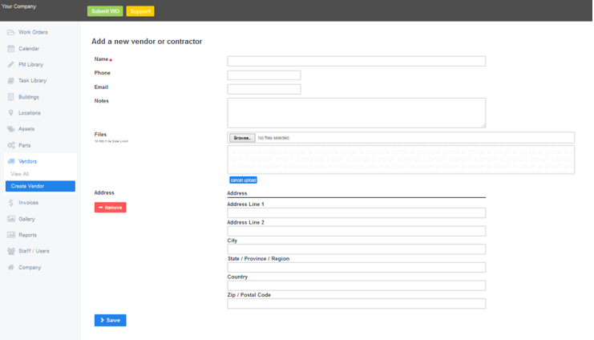
STEPS:
1. Go to your VENDORS tab and CREATE VENDOR
2. Fill in required fields:
a. Name - Enter the name of the vendor
3. Enter all the necessary non-required fields you wish to complete;
a. Phone number - Enter any contact number for the vendor
b. Email - an email address that the vendor can be contacted
c. Notes - you may attach any notes pertaining to the vendor by clicking browse and locating your file.
d. Files - any pictures or documents you wish to attach regarding the part
e. Address - enter the address of the vendor
4. Save
Inviting a Vendor as a user
To invite a user you must edit vendor you have created by clicking on the edit button in VIEW ALL. Once they receive their invite by email, they must register a new username/password to log into your account. Only then can you add the newly registered Vendor onto a work order or pm.
There are 2 types of vendors that you can create
1. VENDOR - Unlimited will be able to manipulate all current data within a work order. This is for businesses that have no STAFF and use the vendors as their predominant maintenance requirements.
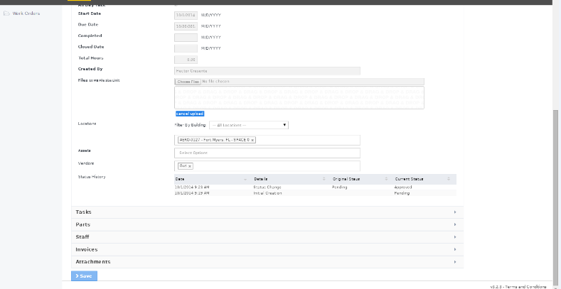
2. VENDOR Limited: This is a more restrictive role which eliminates viewing of the following data in any work order/pm;
LOCATIONS
ASSETS
VENDORS
STATUS HISTORY.
Vendor limited is not allowed to open the following sections in the WO accordion: TASKS, PARTS, STAFF and INVOICES.
14Invoices
The main purpose of Maxpanda's invoice feature is to track vendor costs. This feature allows you to report vendor costs as well as all external costs to assets and locations. To learn more on how this reporting work, please see section 16 (reports).
Adding a new invoice:
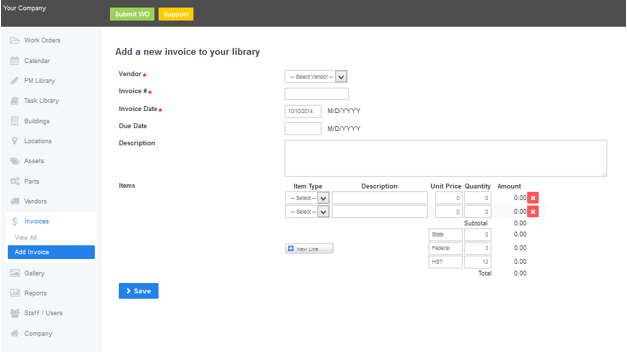
STEPS:
1. Go to your INVOICES tab and ADD INVOICE
2. Fill in required fields:
a. Vendor - Select the name of the vendor from the drop down list. If you need to create a new vendor please see section 13 (vendors) by clicking here
b. Invoice number - This can be any number you wish. However, it would make the most sense to put the invoice number given by the client
c. Invoice date - Enter the date of the invoice
3. Enter all the necessary non-required fields you wish to complete;
a. Due date - the date in which the invoice is due
b. Description - Any description you wish to ass regarding the invoice
c. Items - This is where you can add details from the invoices that compile its cost
a. Item type - here you can select from the drop down menu what the vendor is charging you (ie a product or service). If you wish to add additional items to the drop down menu, you can do so by going to the COMPANY tab then INVOICE ITEM TYPE under COMPANY SETUP.
b. Description - a short description of the invoice item type
c. Unit price and quantity - the amount of price of each unit in the invoice
d. Enter tax rates;
i. This tool allows you to easily capture the full amount of the invoice with taxes included
ii. To change the rates that automatically appear when creating invoices, please view section 18 (company setup) to learn how or by clicking here
iii. You may also add a new item line by clicking on the add new line button shown above.
You can also edit any invoices you have created by click on the edit button in VIEW ALL
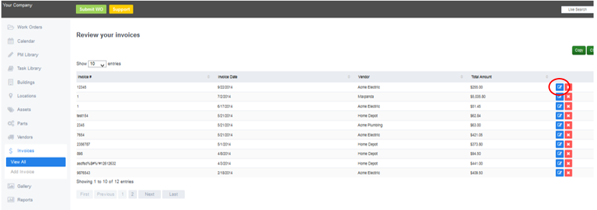
15Gallery
Under the GALLERY tab, you will be able to view all pictures and documents within your Maxpanda account. However, please note that each picture and document are restricted to the users that they are applicable to; with the admin having full access.
Maxpanda supports all major file and doc types. For example: jpeg, jpg, gif, png, bmp, cad, pdf, even mp3 and of course all microsoft office type files.
16Reports
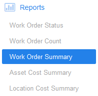

Work Order Status, Work Order Count, Work Order Summary, Asset Cost Summary & Location Cost Summary
Work Order Status - Graph your work orders by status broken down by current month, year, last month and lifetime. Non downloadable data.
Work Order Count - Graph work order statuses by selecting start and end dates. Non downloadable data.
Work Order Summary - A dynamic report allowing admins to select wo's by dates to create a real time report which includes: WO #, Title, Status, Start, Due, Completed, Closed, Type, Category, Hours, Labor, Parts, Invoice and Total Costs. This report can be extracted/downloaded to multiple file types including: PDF, XLS, XLSX, RTF, MHT, HTML, TEXT, CSV and IMAGE.
Asset Cost Summary - Similar to work order summary but admins select the desired assets within their account. This report can be extracted/downloaded to multiple file types including: PDF, XLS, XLSX, RTF, MHT, HTML, TEXT, CSV and IMAGE.
Location Cost Summary - Similar to asset cost summary - admins select buildings and or multiple locations to capture total costs. This report can be extracted/downloaded to multiple file types including: PDF, XLS, XLSX, RTF, MHT, HTML, TEXT, CSV and IMAGE.
Building cost summary - Adding a new preset enterprise report for admins. Generate your entire costs by building. If you're managing multiple facilities and want to report on 1 or all your BUILDINGS rather than select locations, then this report is for you. Gauge performance and costs per building etc…
Asset thresholds - Here you can compile reports regarding too many work orders being completed on a specific asset. For each asset you can set a threshold of the maximum number of work orders that SHOULD be completed on an asset within a certain time period. This report shows the number of work order above the threshold. To set these threshold limits, please section 18 (company setup) by clicking here.
Location threshold - similar to asset thresholds, this report shows you the number of work order above the location thresholds you have set. To set these threshold limits, please section 18 (company setup) by clicking here.
Download your data: FAQ
Download your data to your favorite file format 24/7. It's your data! Crunch it, email it to your accounting department, board members or senior management group. You can even map out specific fields to import into your accounting package if you like. Take control of your maintenance department with a click of a button. Why is it important that you have access to your data?
It's important that you can access your data when you want it, where you want it, whether is it to import it into another service or just create your own copy for your archives. People usually don't look to see if they can get their data out of a product until they decide that they want to leave. For this reason, we always encourage you to ask these three questions before starting to use a product that will store your data:
Can I get my data out in an open, interoperable, portable format?
How much is it going to cost to get my data out?
How much of my time is it going to take to get my data out?
Answers to these questions are:
Yes
Nothing
Seconds
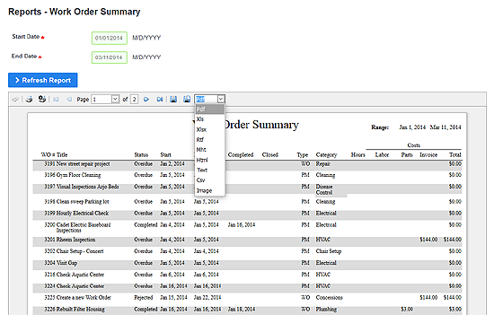
Download your data: FAQ
Download your data to your favorite file format 24/7. It's your data! Crunch it, email it to your accounting department, board members or senior management group. You can even map out specific fields to import into your accounting package if you like. Take control of your maintenance department with a click of a button. Why is it important that you have access to your data?
It's important that you can access your data when you want it, where you want it, whether is it to import it into another service or just create your own copy for your archives. People usually don't look to see if they can get their data out of a product until they decide that they want to leave. For this reason, we always encourage you to ask these three questions before starting to use a product that will store your data:
Can I get my data out in an open, interoperable, portable format?
How much is it going to cost to get my data out?
How much of my time is it going to take to get my data out?
Answers to these questions are:
Yes
Nothing
Seconds
17Users
Role Management and permissions are outlined on Maxpanda.net
Maxpanda CMMS has 8 PRE-DEFINED ROLES and are listed in priority
- ADMIN - full access to the entire app
- EDITOR - full access to all except cannot download REPORTS or access COMPANY Settings
- STAFF - your internal maintenance staff
- VENDOR - your external contractor/vendor
- SUBMITTER - can only submit new work orders and review their own work orders
- TENANT - can only submit new work orders and review their own work orders
- VIEWER - can only view a work order assigned to them - wo's are greyed out and can't be edited in this mode
- GUEST - can only submit a work order - if a guest enters their email address they will receive wo updates
| THE ADMIN 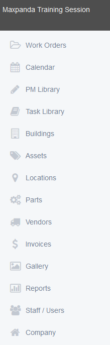 | THE EDITOR 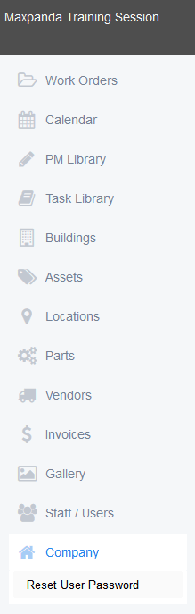 | THE STAFF 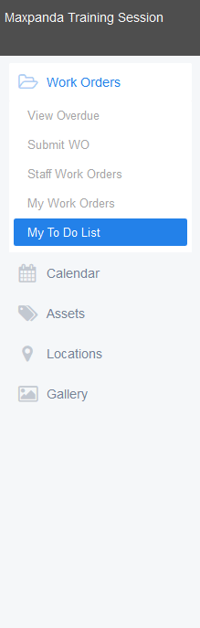 |
| THE VENDOR 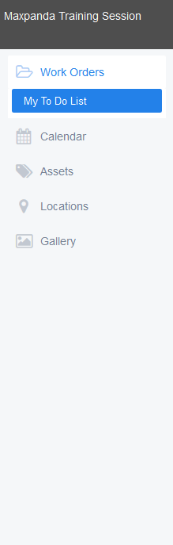 | THE SUBMITTER 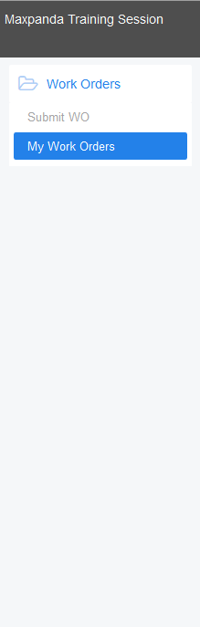 | THE TENANT 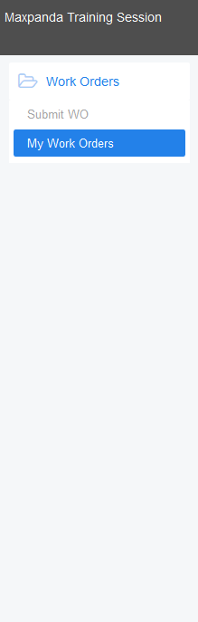 |
| THE VIEWER 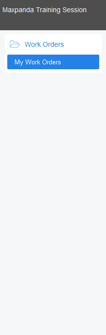 |
THE GUEST 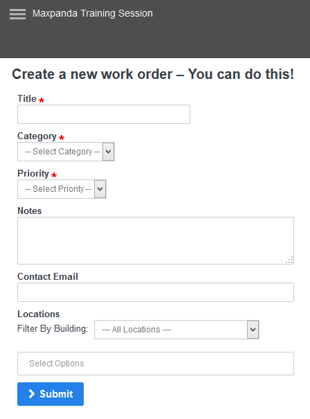 |
|
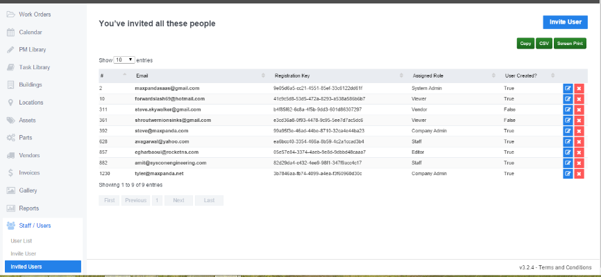
User list
Here you can view all your current users. Admin users can edit or delete any user. Without actually deleting the user from your account, you can still search/filter/report on disabled users (users that can't log into your account anymore).
Invite user
Not only is it important to invite user into your Maxpanda database, it is also important to set limitations for certain users who are going to using your system.
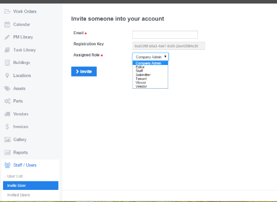
1. Company admin - This user sees all functions in our software program. With your organization, only the top managers should have this role as there are no limitations or restrictions.
2. Editor - Similar to the admin user, the editor has all functionality except the ability to produce reports as well as all the features in the company tab (does include company setup). This means that the editor cannot change the subscription level, credit card or see any usage details. Lower level managers are usually the positions for these users. Company admin and editors are the only users who can approve work orders.
3. Staff - The staff role is a much more restrictive role. The staff role can submit and edit only work orders assigned to them. These users can only view the pictures and documents in the GALLERY section that are within work orders assigned to them. However, staff can look up work orders that are not assigned to them.
4. Submitter - These users can only submit a work order and view the work orders assigned to them. These users are also restricted in setting the start and end date of their work orders. The start date is automatically set to the current date with the end date as 7 days in the future.
5. Viewer - Cannot submit work orders but only view those assigned to them
6. Vendor - There are 2 types of vendors (Unlimited and limited). Please see section 13 (vendors) by clicking here.
Invited users
This page shows all the users that have been invited to your Maxpanda account and indicates which ones have created an account or not.
18Company
The COMPANY tab is only available to the ADMIN(s). Editors or other users can not view Company settings.
Edit - Here you can edit your company name, time-zone, phone number and addressv
Current Plan - Edit your current plan, move up or down or unsubscribe
Guest Services - Enable guest to visit your Maxpanda account
Change Credit Card - These things tend to expire
Preferences - change time format
Payments Made - view your payment history
Usage - view your: subscription level, next cycle date, number of work orders in the current month and year, data storage used (with limit), and number of pm work orders, assets, users, attachments and storage you have set up
Reset User Password- security is important
Company Setup Procedures
LOCATION TYPE: Create a new location type by going to LOCATION TYPE under COMPANY SETUP in the COMPANY tab. Then click ADD in the top right corner.
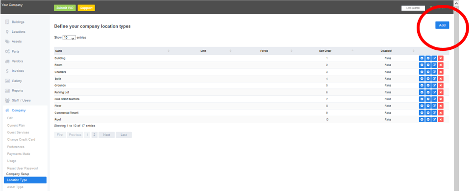
1. Fill in fields for the new location type;
i. Name - Name of the location type
ii. Sort order (not required) - the order in which you wish to see the location appear in the drop down menu when creating new locations.
iii. Work order threshold limit (not required) - Enter the number of work order that you feel is normal for a given period below;
iv. Work order threshold period (not required) - Enter the number of DAYS of your threshold limit. Note: Any locations can have as many work orders regardless of the threshold limit you set. This feature is for conducting reports. See sections 16 for more details.
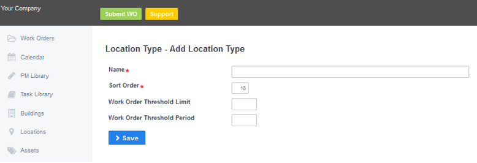
ASSET TYPE: Create a new asset type by going to ASSET TYPE under COMPANY SETUP in the COMPANY tab. Then click ADD in the top right corner.
2. Fill in fields for the new asset type;
v. Name - Name of the asset type
vi. Sort order (not required) - the order in which you wish to see the asset appear in the drop down menu when creating new assets.
vii. Work order threshold limit (not required) - Enter the number of work order that you feel is normal for a given period below;
viii. Work order threshold period (not required) - Enter the number of DAYS of your threshold limit (ie a vehicle as an asset received oil change maintenance would have a normal
threshold limit of 6 work orders per 365 days). Note: Any asset can have as many work orders regardless of the threshold limit you set. This feature is for conducting reports. See sections 16 for more details.
ASSET STATUS: Create a new asset type by going to ASSET STATUS under COMPANY SETUP in the COMPANY tab. Then click ADD in the top right corner.
1. Fill in fields for the new asset status;
i. Name - Name of the asset status
ii. Sort order (not required) - the order in which you wish to see the asset appear in the drop down menu when creating new assets and during app use.
INVOICE ITEM TYPE: Create a new invoice item type by going to INVOICE ITEM TYPE under COMPANY SETUP in the COMPANY tab. Then click ADD in the top right corner. Now enter the name of the invoice item type and click save.
INVOICE TAXES: Add or edit the all the tax rates that automatically appear when adding invoices. Note: you can always change these rates when creating the invoices.
WORK ORDER CATEGORY: Add or edit the work order categories you, your team or clients see when creating work orders. Work categories help you filter and group work orders by categories that fit your organization. Each Maxpanda client is different in many ways so let the application fit your needs.
WORK ORDER PRIORITY: Add or edit the levels of work order priorities you, your team or clients see when creating a work order.
19GoMAX! Mobile
The mobile application that Maxpanda offers is a very useful tool for users that you have who are always on the go. These users can go from location to location submitting work orders. In most cases, the main users will be the staff or vendors dealing with the work orders tasks first hand. These users will be simply submitting and completing work orders (ie a machine operator submitting a work order when his/her machine breaks down). Therefore, we have kept our mobile app as simple as possible.
The 4 main functions are:
1. Submit work orders
2. My work orders
3. My to do list
4. Overdue work orders
These functions are completed the same way they are completed on the regular desktop application. For further instructions on these functions, please see section 5 (work orders) or visit our website here.
20Sites / Departments / Regions
1. Sites
What are Sites?
a. A Site (or Department) is an infinite number of Buildings housing unlimited Locations, Assets and Users. All managed by an Admin. Sites are able to operate autonomously within a Corporate umbrella.
a. Creating a Site
When you first create your account you only have one site; Corporate.
To create a new Site:
1. Select SITES menu option from the left-hand menu
2. Select CREATE SITE
3. Give your Site a name and description
4. SAVE
You have now created your first Site.
b. Switching between Sites
When you are viewing a Site you will only be able to view Buildings, Locations, Assets and Work Orders assigned to that Site. Any Buildings, Locations, Assets and Work Orders you create within that Site will be assigned to that Site.
Users can switch between Sites from the drop-down menu located in the upper right corner.
c. Adding Buildings, Locations and Assets to Sites.
Select the Site you want to add Buildings, Locations or Assets to from the drop-down menu located in the upper right hand corner.
Add a Building
Add Locations
Add Assets
(Already in Tech Doc)
d. Moving Buildings, Locations, Assets between Sites
To move your Buildings, Locations, Assets between Sites:
1. Select SITES > VIEW ALL from the main menu.
2. Click the blue EDIT button for the Site you want to move your Buildings, Locations and Assets in or out of.
To move a Building/Location/Asset into a Site, check off the Buildings/Locations/Assets you wish to move then click ADD.
The Building/Location/Asset, along with any associated Locations, Assets or Work Orders have now been moved into the new Site.
To remove a Building/Location/Asset from a Site, check off the Building/Location/Asset to want to remove and click REMOVE.

The Building/Location/Asset has now been removed and placed in the default Corporate Site.
e. Deleting a Site
To delete a Site:
1. Select SITES > VIEW ALL from the main menu.
2. Click the red X for the Site you wish to delete.
Note: You cannot delete Sites that have Buildings, Locations, Assets or Work Orders associated with it.
f. Assigning Users to Sites
Users can be assigned to multiple Sites with a different user role in each.
To assign User roles and Sites:
1. Select STAFF/USERS > USER LIST from the main menu
2. Click the blue EDIT button
3. Click the ADD button.
4. Assign a USER ROLE and SITE from the drop-down menu
5. SAVE
g. Viewing Work Orders
To view work orders for a Site:
1. Select the Site from the drop-down menu in the upper right-hand corner
2. Select WORK ORDERS from the main menu
3. Select VIEW ALL
4. To view all work orders from all Sites, select COMPANY WORK ORDERS
Note: You can toggle between Sites by selecting another Site from the drop-down menu.
h. Guest Portal
a. Activated per Site
Each Site must enable to Guest Portal to enable guests to visit your Maxpanda account. The Guest Portal is located in the Site menu option.
Enabling the Guest Portal:
1. Select the Site you wish to enable the guest portal for from the drop-down menu located in the upper right-hand corner.
2. Select SITES > GUEST SERVICES from the main menu.
3. Check the box to enable Guest Services.
4. Enter a code word
5. SAVE
A link will be generated that will then enable guests to submit work orders; simply provide them with the link.
Option: You may also choose to Enable Locations Requests. This allows the guest submitter to choose the location of the work order froma drop down menu. Do not check this if you do not wish for guests to see your locations.
2. Custom Emails
Whenever a work order is created, assigned, or its status changes, emails are sent out to users affected. You can customize what these emails say for each category of email.
To customize your emails select Company > Custom Emails from the main menu. Type in what you would like each type of email to say and click Save.
Please note: emails are not customizable by Site. All users across all Sites will receive these emails.
21Bins for GoMax! Mobile App
Permissions:
Company Admin/Company Editor/Site Admin/Site Editor can see all bins and can add/remove parts
Staff can see but not add/remove parts from bins
Submitters/Tenants/Viewers/Vendors cannot access bins
1. Scan Bin QR Code:
Bin Name
Bin Number
"Add Part" button
List of parts in the bin:
Part Name
Part Number
Quantity in Bin
*Company Admin/Company Editor/Site Admin/Site Editor/Staff can see this screen.
*Submitters/Tenants/Viewers/Vendors cannot.
Bin List Screen:
Company Admin/Company Editor/Site Admin/Site Editor can select part to add/remove parts from bin.
Staff cannot select parts
2. To add/remove parts from bin, select desired part from the list.
Part Name
Part Number
Quantity in Bin (total amount of that part in the bin)
Quantity Available (amount of parts not in any bin)
Box to enter Quantity
Add button, remove button
Buttons double as save buttons and adjust the total parts in bin.
Cancel Button
Adding/removing parts from bin:

1/2 B. Combine 1 + 2 into one screen option:
See all bins, quantities and add and remove from same screen.
3. Select the "Add Part" button will allow you to add a new part to the bin (since it is not in the bin, it cannot be selected from the list)
Options to select part from a list or scan the Parts QR Barcode.
This should work the same way as adding a part to a work order.
"Add Part" button
"Scan Part" button
Select Part from drop-down list (similar to adding part to work order)
Adding part to bin:
Once a part is selected, choose the quantity to add to the bin.
Quantity available is the amount of parts on hand not currently in a bin.
Can add multiple different parts to the bin add once
If Part being added is already in the bin, merge them together, adding the 2 totals together.
4. Selectin a Bin from menu
Menu options available in main menu under "My WO's"
Menu option called "Bins"
Selecting "Bins" brings up a list of all bins in the Site.
List each Bins name and number:
Bin Name
Bin Number
Select a bin will bring up the parts available in that bin. (See #1).
5. Adding parts to work order
If client has not created any bins in their account, nothing in this process changes.
If client has created Bins:
Initial screen doesn't change
If part added or scanned in also linked to a bin, adding the part should bring up a list of the quantity of parts not currently binned, as well as each bin the part is linked to and the quantity in that bin.
6. Scanning a Part QR Code
Scanning a part's QR code should bring up current menu.
Selecting the Inventory should now list all inventory, including bins where the part is located.

Option A: Simple List; select to add and remove
Similar to Bin menu option, but reverse Parts and Bins
Select the bin lets you add ot remove parts from bin.
Option B: Combined list
List of all bins, can add or remove from the same screen.
22Service Level Agreement
1. Work Order Priority Changes
Added a new field called Due Date Duration. This value is added to the Work Order's Start Date when created to calculate the Due Date. The due date duration is included in the select lists for Work Order Priorities. Added a list of Response time actions. The actions are only available to Companies on Enhanced Plans or higher. Starter Plans will not see the Response Time Actions on Work Order Priority edit page.
i. Companies can define a Response Time reminder (SLA) for each work order status. When the duration is exceeded, an email is sent to all the users in the company with the specific roles defined.
ii. Future version will include Text Messages
iii. If a WO Priority has not actions defined, no reminders will be sent.
iv. A new Response time action only takes effect on new work orders.
v. Maxpanda checks for missed SLAs every 5 minutes.
2. New Work Order Status
On Hold - indicates the WO has been placed on hold. When the status is changed to In Progress, the due date is adjusted by the about of time the WO was on hold.
i. If a Daily WO, the due date is only moved in whole days. If the time portion is visible, the Due date is adjusted by the time on hold.
In Progress
3. Overdue Status
If a Due date is changed to a future date, the overdue status is changed to Approved.
4. Work Order Summary Report
The report displays the amount of time a work order spent On Hold. If a work order was on hold many times, the duration of time is summed and displayed on the report.
If the Work Order is currently on hold, Time on hold is calculated from the current date.
23Departments
- Departments can be set for each individual SITE or COMPANY WIDE.
- Assign each building to a Department.
- Assign multiple departments to a single building.
- If you don't assign a department to a building, it will always appear during the work order filter process.
- Assign any user to 1 department or multiple departments.
- By doing this they only have access (view work orders) to the buildings in that department.
- They can only submit work orders to buildings/locations assigned to that department.
- Assign people to multiple departments or buildings or locations. You can really get fine grained here.